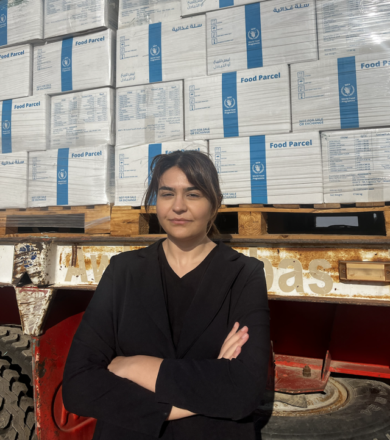
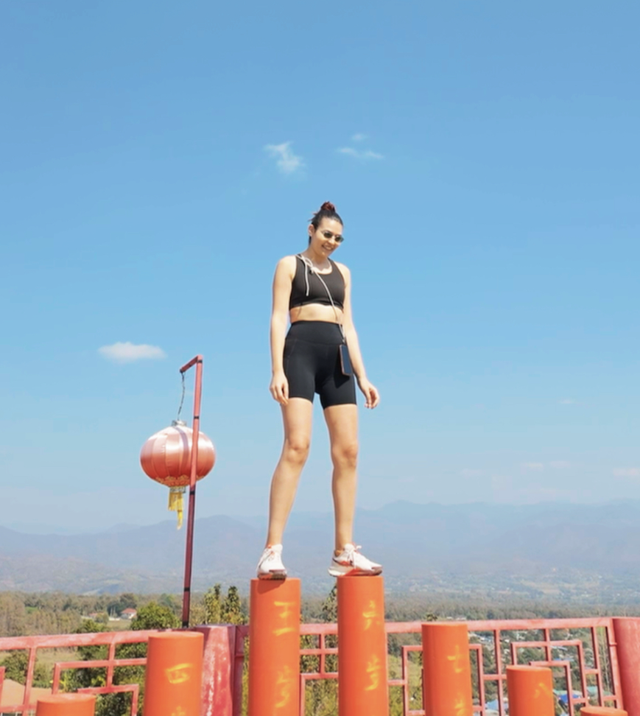
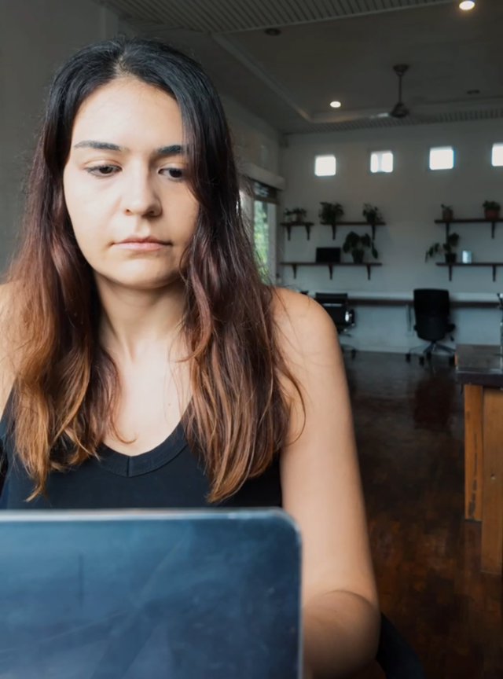

About me ✷
Who I am, and how I got here
I have spent my career making complicated operations run without the chaos.
Supply chain
on the line

photo 1I built systems that move things on time
I managed complex systems that got products onto shelves on time, and I built and optimised supply chains that delivered food aid to crisis zones across MENA.
The career break
stepping back

photo 2I stepped back on purpose
I built a Substack on career transitions that grew to around a thousand readers. I learned how to build an audience, a body of work, and a point of view.
Now
building

photo 3I help founders reclaim their time
I help women running founder-led businesses reclaim their time and creativity by deciding where their attention goes on purpose.